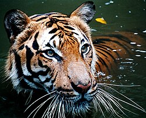

Semua info dipetik dari Wikipedia.
Created by: Muhammad Aqif Naufal Bin Mohd Nazri
- Merupakan tiga spesies mawas ekstan yang berasal dari Malaysia dan Indonesia yang terdapat di kawasan merangkumi hutan-hutan hujan Borneo dan Sumatera. Haiwan ini tergolong dalam genus Pongo dan pada mulanya difikir satu spesis; sejak 1996 ia terbahagi kepada dua spesies, iaitu orang utan Borneo dan orang utan Sumatera. Pada November 2017 dilaporkan bahawa spesies ketiga orang utan telah dikenal pasti, iaitu orang utan Tapanuli.
- Dikenali sebagai Harimau Belang merujuk kepada subspesies harimau yang hanya didapati di Semenanjung Malaysia. Harimau ini disahkan sebagai sub-spesies berasingan dari sub-spesies Harimau Indochina melalui ujian genetik dan pada tahun 2004. Dianggarkan terdapat hanya 200 ekor harimau ini yang hidup liar.
- Sejenis haiwan bovin yang besar dan berbulu warna gelap di Asia Selatan dan Asia Tenggara. Bilangannya yang terbesar pada hari ini adalah di India. Seladang ialah spesies lembu liar yang terbesar dan adalah lebih besar daripada Kerbau Tanjung, Kerbau Air Liar Asia, dan bison. Dalam konteks pelancongan safari, ia dikenali sebagai bison India, akan tetapi istilah ini tidak tepat daripada segi teknikal. Bentuk bela jinak Seladang dikenali sebagai gayal atau mithun.
- merupakan spesies yang paling kecil antara hanya empat spesies yang masih wujud dalam keluarga Tragulidae serta infraorder Tragulina. Serupa dengan spesies-spesies lain dalam famili Tragulidae, kancil tidak mempunyai tanduk, dan kakinya pendek dan kurus. Nama saintifiknya Tragulus kanchil.
- sejenis reptilia lautan daripada superkeluarga Chelonioidea dari order Testudines. Terdapat tujuh spesies penyu: penyu hijau, penyu tempayan, penyu karah, penyu pipih, penyu belimbing, penyu lipas dan penyu Kemp.